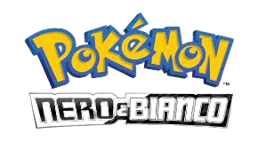
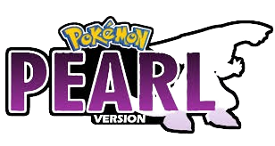

Unima è una regione del mondo dei Pokémon. È l'ambientazione dei giochi di quinta generazione, Nero e Bianco e Nero 2 e Bianco 2. A differenza delle precedenti, questa è molto lontana dalle altre quattro regioni e i Pokémon che vi abitano sono diversi da quelli di Kanto, Johto, Hoenn e Sinnoh. Nel suo editoriale, Junichi Masuda ha suggerito che la geografia e la società di Unima sono ispirate all'area metropolitana e all'intero stato di New York, che possiede un mix di aree rurali e aree urbane, insieme a fabbriche e complessi industriali.
Pokémon Diamante Lucente e Pokémon Perla Splendente sono ambientati nella regione di Sinnoh. Con la sua natura rigogliosa e l'imponente Monte Corona a dominare il paesaggio, la regione di Sinnoh è una terra ricca di leggende tramandate nel tempo.
TEPIG
POKEMON BIANCO E NERO(quinta generazione)
descrizione: Tepig è un Pokémon di tipo Fuoco introdotto in quinta generazione.Tepig si evolve in Pignite a partire dal livello 17 e quindi in Emboar a partire dal livello 36.
habitat: I Tepig non si trovano facilmente, tuttavia può darsi che vivano nelle zone vicine al fuoco.
OSHAWOTT
POKEMON BIANCO E NERO(quinta generazione)
descrizione: Oshawott è un Pokémon di tipo Acqua introdotto in quinta generazione.Oshawott si evolve in Dewott a partire dal livello 17 e quindi in Samurott a partire dal livello 36.
habitat:I pochi esemplari di Oshawott selvatici vivono prevalentemente in acqua, ma si trovano a loro agio anche sulla terraferma.
SNIVY
POKEMON BIANCO E NERO(quinta generazione)
descrizione: Snivy è un Pokémon di tipo Erba introdotto in quinta generazione.Si evolve in Servine a partire dal livello 17 e quindi in Serperior a partire dal livello 36.
habitat: Gli Snivy non si trovano facilmente. I pochi esemplari vivono nelle foreste e nei luoghi erbosi.

CHIMCHAR
POKEMON PERLA(quarta generazione)
descrizione: Chimchar è un Pokémon di tipo Fuoco introdotto in quarta generazione.Si evolve in Monferno a partire dal livello 14 e quindi in Infernape a partire dal livello 36.
habitat: Chimachar è un Pokémon molto raro più presente in cattività che in natura dove nidifica su rupi e montagne rocciose.
piplup
POKEMON PERLA(quarta generazione)
descrizione: Piplup è un Pokémon di tipo Acqua introdotto in quarta generazione.Si evolve in Prinplup a partire dal livello 16 e quindi in Empoleon a partire dal livello 36.
habitat: I Piplup vivono sulle rive dei mari nei climi più freddi. Nonostante siano abbastanza rari vengono utilizzati come Pokémon iniziale dal Professor Rowan, che li affida ai giovani allenatori della regione di Sinnoh.

TURTWIG
POKEMON PERLA(quarta generazione)
descrizione: Turtwig è un Pokémon di tipo Erba introdotto in quarta generazione.Si evolve in Grotle a partire dal livello 18 e quindi in Torterra a partire dal livello 32.
habitat: È difficile trovare Turtwig nelle zone selvagge. Di solito è dato dal Professor Rowan come Pokémon iniziale ai giovani Allenatori. Può essere trovato anche lungo i laghi mentre rafforza il suo guscio bevendo.